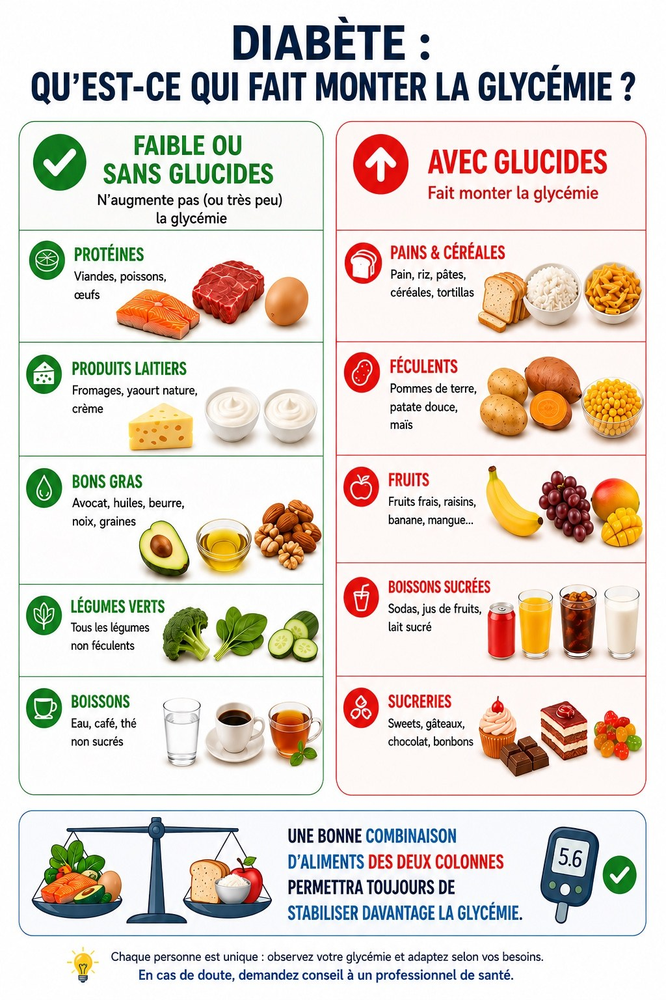

Calcul glucides
Simple et rapide 💗
Chargement de la base...
🔎
⚖️
g
🧮Voici les glucides à
Voici les glucides à
entrer dans la pompe:
0 g
de glucides nets
ℹ️ Calcul indicatif. Résultat toujours arrondi à la baisse.
Registre
Aliments et recettes
Créer recette
Ajoute une recette maison ou un produit emballé
Informations
g
Ajouter un ingrédient
Pour plus de précision, utilise le poids en grammes lorsque possible. Les tasses/cuillères sont approximatives.
Ingrédients de la recette
Glucides totaux0 g
Glucides / 100 g0 g
Produit emballé
g
Ajuste l’équivalent en grammes selon ce qui est écrit sur l’étiquette.
Glucides nets0 g
Glucides / 100 g0 g
Aide-mémoire
Qu’est-ce qui fait monter la glycémie?

Paramètres
Mode protégé
Accès administrateur
Entre le code administrateur pour modifier ou supprimer des éléments familiaux.
Version installée : 2.1.0
Vérification des mises à jour disponible.
Base centrale
La base commune est chargée depuis database.json sur GitHub.
Sauvegarde locale
Code administrateur
Verrouillage
Détail
Fiche de l’aliment ou de la recette
Glucides / 100 g0 g
Glucides totaux—